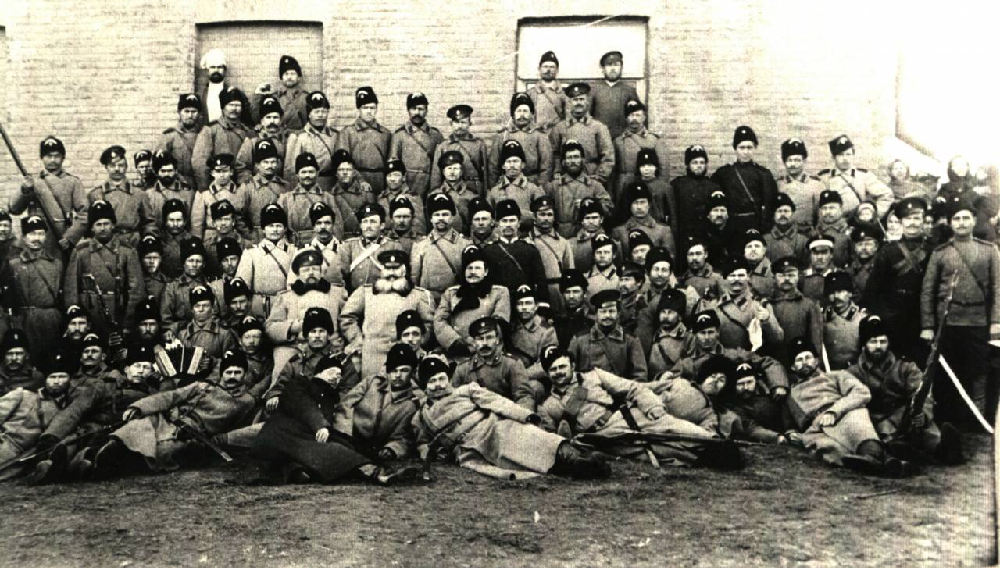
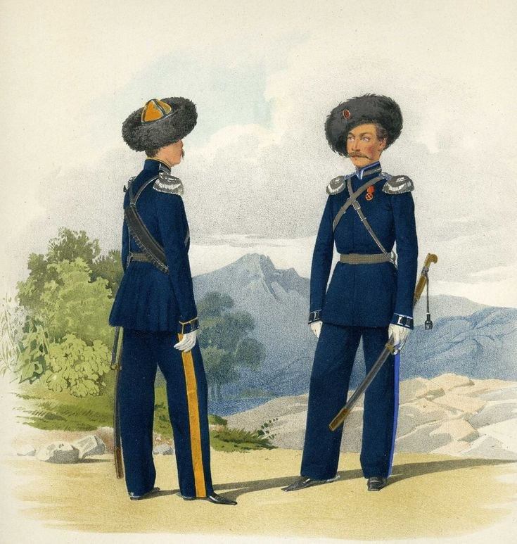
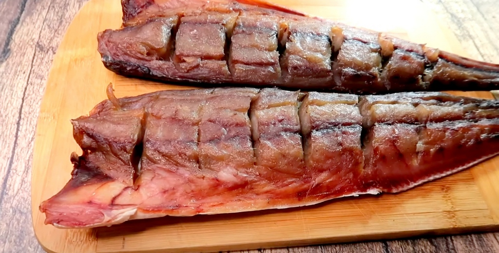
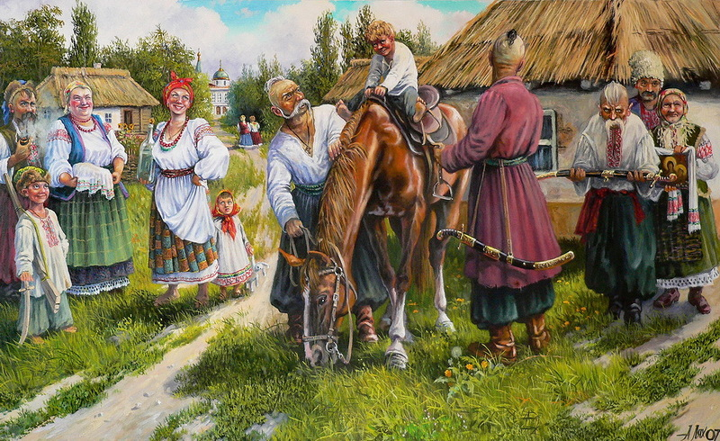
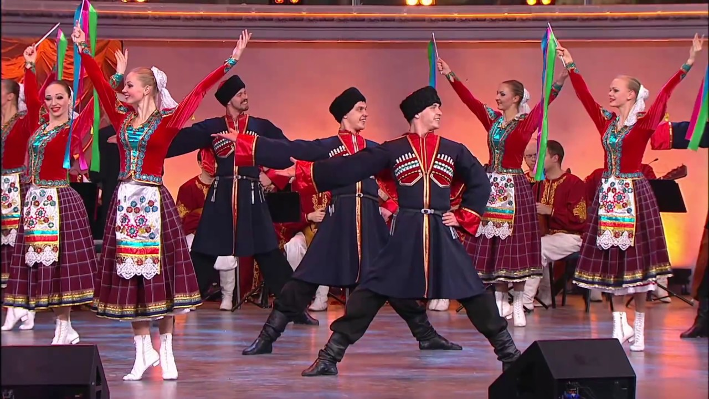
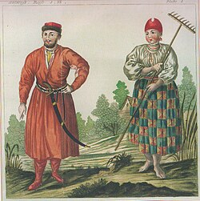
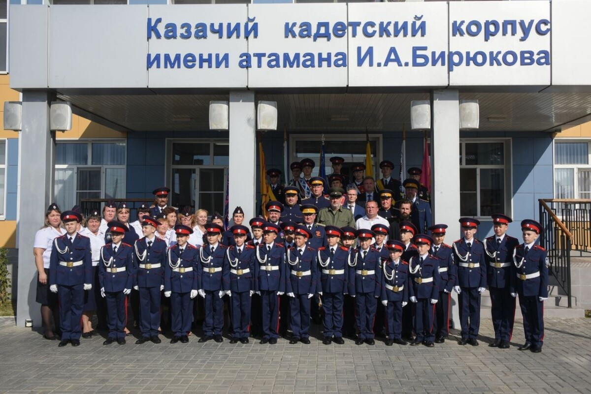

Кто такие астраханские казаки?
Астраханское казачье войско — это не просто армия, а целое сообщество смелых людей, которые веками охраняли южные рубежи России. Они были своего рода «пограничным спецназом» своего времени. Казаки на Нижней Волге появились еще в XVI веке, но официально войско было сформировано в 1750 году для защиты торговых путей и борьбы с набегами. Их главными ценностями всегда были свобода, православие и верность Родине. Это люди, которые умели и землю пахать, и границы защищать.

Стиль Воина
Форма: синие мундиры с желтыми лампасами. Желтый — это цвет степей и солнца.
Мастерство джигитовки и владение шашкой делало их практически неуязвимыми в бою.

Курень
Казачий дом — это целая крепость и уютное гнездо одновременно. Здесь всё было продумано до мелочей.
Курень (казачий дом) в Астрахани часто строился на подклете (высоком фундаменте), чтобы спасаться от разливов Волги. Внутри всегда была «чистая половина» для гостей и большая печь. Двор (баз) включал в себя конюшни, амбары и летнюю кухню. Порядок на дворе считался делом чести, а за забор отвечал хозяин.

Вкус Волги
Трапеза астраханцев — это рай для любителей рыбы. Главные блюда: балык, знаменитая астраханская уха и жареная сазанья икра. Казаки также обожали арбузы.

Иерархия и Сила
Слово отца — закон, дед — хранитель мудрости. Но казачка была уникальной: пока муж в походах, она управляла всем и могла защитить дом с оружием в руках.
Воспитание строилось на глубоком уважении к старшим.

Песни и Танцы
Казачья песня — это душа народа. Астраханские песни часто рассказывают о Волге, походах и тоске по дому. Пели хором, создавая мощное многоголосие.

Одежда
Одежда в быту была практичной. Женщины носили длинные юбки и кофты с кружевом, а мужчины вне службы — холщовые рубахи и шаровары, заправленные в сапоги.

Свадьба
Свадьба была главным событием станицы. Это целый сериал с выкупом невесты, «пропиванием» коня и гуляньями, которые длились несколько дней.

Наследие сегодня
В Астрахани работает казачий кадетский корпус. Подростки учатся истории, тактике и верховой езде, продолжая традиции отцов.
